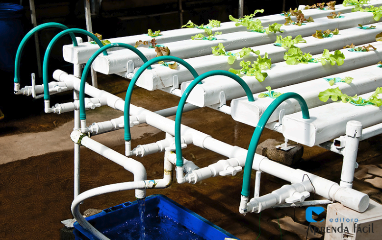

Hidroponia
Agricultura sem solo
Sistema de cultivo onde as plantas se desenvolvem sem a necessidade de terra. As raízes ficam imersas na água ou em um substrato inerte (fibra de coco, argila expandida ou perlita), recebendo uma solução nutritiva balanceada com todos os macros e micronutrientes necessários.